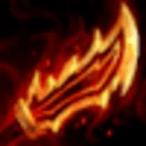
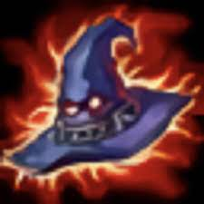
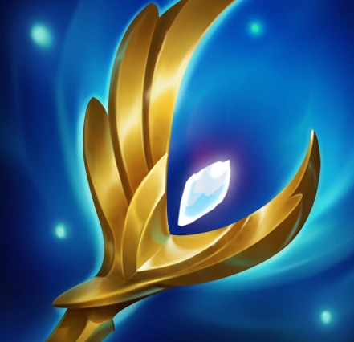
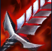
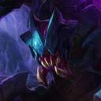
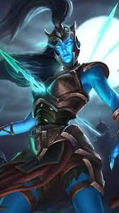
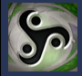

pero me armo el vacio es importante equipar bien a la kaisa y a la belveth
Kaisa
belveth
a la kaisa le pongo morello siempre y despues podria ser guinso puede ser rabadon o el baculo del arcangel creo que se llama
morello


guinso

rabadon

baculo del arcangel

y a la belveth algo que de velocidad y daño de ataque puede ser la sanguinaria, guinsoo y la que se hace con dos espadas
sanguinaria
guinso
deathblade

si me salen itemes random onda armaduras o cosas asi a cual se las pongo???
Chogath
reksai
Kalista
sello del vacío
yo uso tambien a kalista y si me sale un emblema del vacio de lo pongo a ella porque le da retador a kaisa y pegan mas rapido
trata de agarrar siempre el baculo porque es lo que mas se usa para los guinso y morello